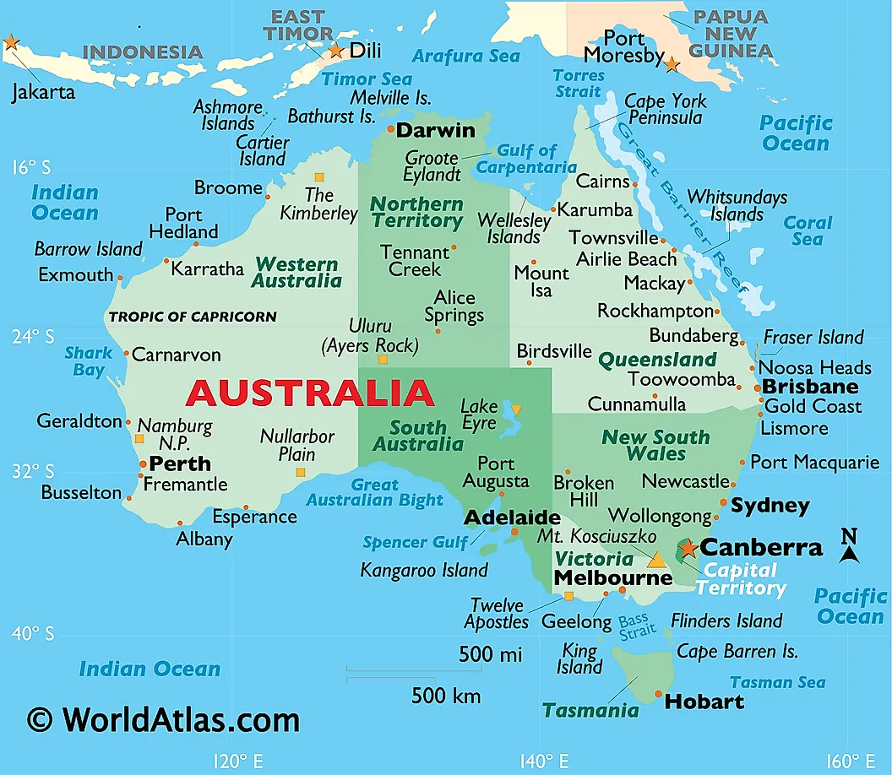
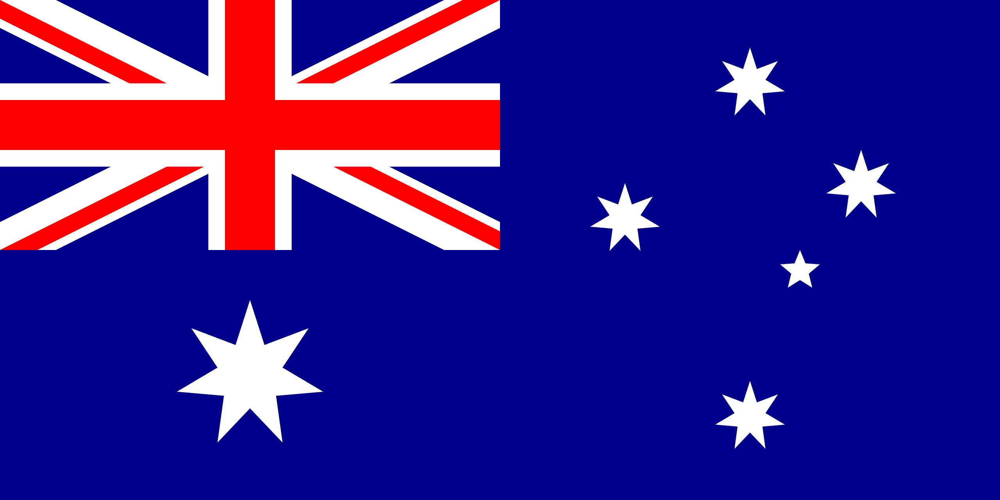

Єдина держава у світі, що займає цілий континент. Австралія належить до країн переселенського типу з високим рівнем економічного розвитку. Завдяки унікальному поєднанню потужного аграрного сектору та передових технологій, країна входить до десятки лідерів за індексом людського розвитку (ІЛР).

млн населення
Сфера послуг формує понад 60% економіки, проте гірничовидобувна галузь залишається ключовою для експорту.
Світовий експортер залізної руди, вугілля та зрідженого природного газу.
Тривалість періоду безперервного економічного зростання до 2020 року (рекорд серед розвинених країн).
Частка доданої вартості в сільському господарстві, яку створює саме малий бізнес.